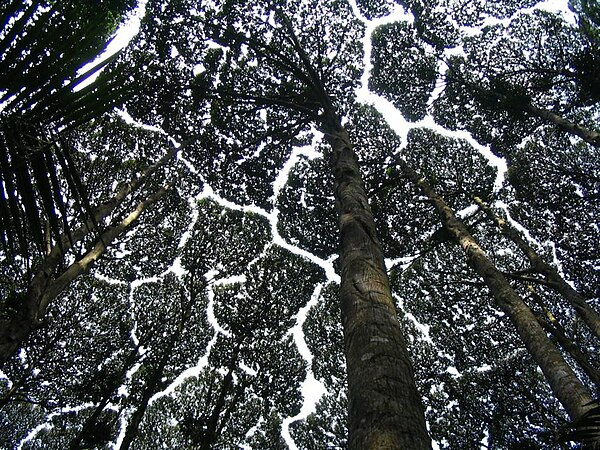

Crown Shyness

For the album by Trash Boat, see Crown Shyness (album).
Crown shyness (also canopy disengagement, [1] canopy shyness,[2] or inter-crown spacing[3]) is a phenomenon observed in some tree species, in which the crowns of fully stocked trees do not touch each other, forming a canopy with channel-like gaps.[4][5] The phenomenon is most prevalent among trees of the same species, but also occurs between trees of different species.[6][7] There exist many hypotheses as to why crown shyness is an adaptive behavior, and research suggests that it might inhibit spread of leaf-eating insect larvae.[8]
Possible physiological explanations
The exact physiological basis of crown shyness is uncertain. [6] The phenomenon has been discussed in scientific literature since the 1920s.[9] The variety of hypotheses and experimental results might suggest that there are multiple mechanisms across different species, an example of convergent evolution.[citation needed]
Some hypotheses contend that the interdigitation of canopy branches leads to "reciprocal pruning" of adjacent trees: trees in windy areas suffer physical damage as they collide with each other during winds; the abrasions and collisions induce a crown shyness response. Studies suggest that lateral branch growth is largely uninfluenced by neighbours until disturbed by mechanical abrasion. [10] If the crowns are artificially prevented from colliding in the winds, they gradually fill the canopy gaps. [11] This explains instances of crown shyness between branches of the same organism. Proponents of this idea cite that shyness is particularly seen in conditions conducive to this pruning, including windy forests, stands of flexible trees, and early succession forests where branches are flexible and limited in lateral movement.[6][12] According to this theory, variable flexibility in lateral branches greatly influences the degree of crown shyness.
Species
References
Goudie, James W.; Polsson, Kenneth R.; Ott, Peter K. (2008). "An empirical model of crown shyness for lodgepole pine (Pinus contorta var. latifolia [Engl.] Critch.) in British Columbia". Forest Ecology and Management. 257 (1): 21–331. doi:10.1016/j.foreco.2008.09.005. ISBN 9781437926163.
Benefits of crown shyness
As with animals, plants also compete for resources - including nutrients, water, space and light - to survive.
In forested areas with dense canopies there is intense c ompetition between plants for light. It is possible that gaps in the canopy resulting from crown shyness allows trees to increase their exposure to light and optimise the process of photosynthesis.
Is wind the only cause of crown shyness?
If abrasion is the primary cause of crown shyness, you would expect it to be more pronounced among trees in windy locations than those growing in sheltered spots. But this was found to not be the case in a study of trees in the Monteverde Cloud Forest Reserve in Costa Rica.
This cloud forest is frequently subjected to high winds - they regularly exceed 100 kilometres per hour in some places during winter. Little difference was found in the crown shyness of trees in windy areas compared to more sheltered ones.